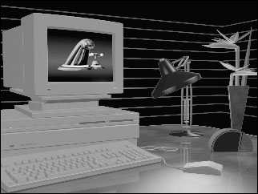
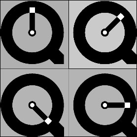
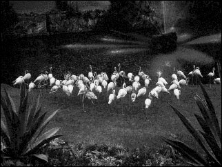
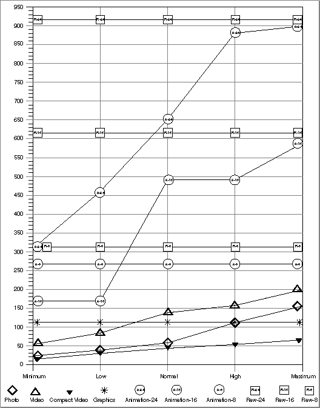
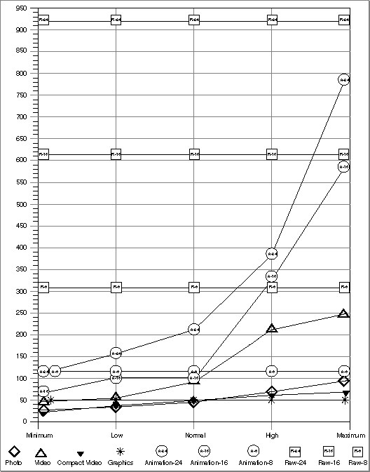
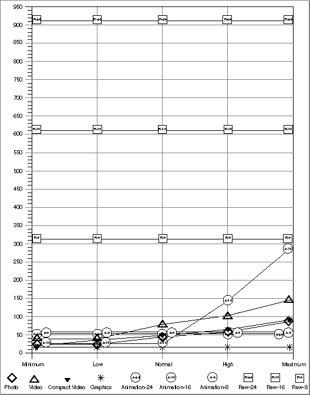
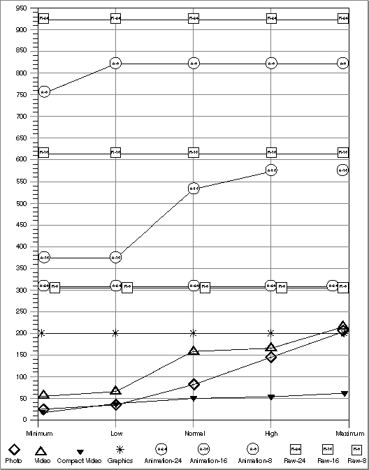

Compressors Supplied by Apple
Apple supplies six image-compression algorithms with the Image Compression Manager. This section discusses each of these compressors and identifies their strengths and weaknesses in light of the compression characteristics just discussed. You can use this discussion as a guideline for choosing a compression algorithm for your specific situation. All the compressors support both temporal and spatial compression except for the Photo and Raw Compressors, which support only spatial compression.The Photo Compressor
The Photo Compressor implements the Joint Photographic Experts Group (JPEG) algorithm for image compression. JPEG is an international standard for compressing still images. The version of JPEG supplied with QuickTime complies with the baseline International Standards Organization (ISO) standard bitstream, version 9R9.The Photo Compressor performs best on images that vary smoothly or that do not have a large percentage of their areas devoted to edges or other types of sharp detail. This is the case for most natural (that is, nonsynthetic) images. In practice, you will find that compression ratios are highly dependent on source images, but they generally range from 5:1 to 50:1 at 24 bits per pixel, with good picture quality resulting from compression ratios between 10:1 and 20:1.
Picture quality is generally very good to excellent and is often good enough for use in demanding desktop publishing applications. Very high-resolution images obtained through the use of 24-bit color scanners would best be compressed using the Photo Compressor. This compressor is good for 8-bit grayscale images; it is not well suited to 1-bit images or non-natural images that usually have high contrast.
On a Macintosh IIsi, the Photo Compressor can compress a 24-bit, 640-by-480 pixel image at a normal quality setting in 7.5 seconds, achieving a compression ratio of 10:1. Decompressing the same image takes 6.5 seconds.
The Video Compressor
The Video Compressor employs an image-compression method developed by Apple. This method was designed to permit very fast decompression times while maintaining reasonably good picture quality. This algorithm's rapid decompression allows applications to display color images or drawings at interactive speeds. This algorithm is best suited for use with sequences of video data.The Video Compressor is better suited to digitized video content rather than synthetically generated images. This compressor supports both spatial and temporal compression. If you use only spatial compression, you may obtain compression ratios from 5:1 to 8:1 with reasonably good quality at 24-bit pixel depths. If you use both spatial and temporal compression, the compression ratio range extends from 5:1 to 25:1.
On a Macintosh IIsi, the Video Compressor can compress a 24-bit, 640-by-480 pixel image at a normal quality setting in 3.5 seconds, achieving a compression ratio of 6.5:1. Decompressing the same image takes 1.0 second.
The Compact Video Compressor
The Compact Video Compressor is best suited to compressing 16-bit and 24-bit video sequences. It employs a lossy algorithm developed by Apple that is highly asymmetrical. In other words, it takes significantly longer to compress a frame than it does to decompress that frame. Compressing a 24-bit, 640-by-480 image on a Macintosh IIsi computer takes approximately 2.5 minutes, achieving a compression ratio of 18.5:1. Decompressing the image takes less than a second.Compared to the Video Compressor, the Compact Video Compressor obtains higher compression ratios, better image quality, and faster playback speeds. The Compact
Video Compressor can constrain data rates to user-definable levels. This is particularly important when compressing material for playback from CD-ROM discs.For best quality results, the Compact Video Compressor should be used on raw source data that has not been compressed with a highly lossy compressor--such as the Video Compressor.
The Animation Compressor
The Animation Compressor employs a compression algorithm developed by Apple. This technique is best suited to animation and computer-generated video content. In addition, the Animation Compressor can be used to compress sequences of screen images, such as might be generated for a training application.The Animation Compressor stores images in run-length encoded format, and it can work in either a lossy or a lossless mode. The lossless mode maintains picture content precisely, storing an animation as a series of run-length encoded images. The lossy mode loses some image quality.
The Animation Compressor's performance and achieved compression ratios are highly dependent on the type of images in a scene. The Animation Compressor is very sensitive to picture changes, and it works best on a clean image that has been generated synthetically. Images captured from videotape generally have considerable visual noise, which can corrupt the inherent similarity of the pixels and make it more difficult for the Animation Compressor to achieve good compression. This compressor works at all pixel depths.
On a Macintosh IIsi, the Animation Compressor can compress a 24-bit, 640-by-480 pixel image at a normal quality setting in 2.0 seconds, achieving a compression ratio of 1.3:1. Decompressing the same image takes 1 second.
The Graphics Compressor
The Graphics Compressor employs a compression algorithm developed by Apple.
This compressor is best suited to 8-bit still images and image sequences in applications where compression ratio is more important than decompression speed.The Graphics Compressor is a good alternative to the Animation Compressor whenever performance is less important than compression ratio. In general, the Graphics Compressor generates a compressed image that is one-half the size of the same
image compressed by the Animation Compressor. However, the Graphics Compressor can decompress the image at only half the speed of the Animation Compressor. Therefore, you should consider using the Graphics Compressor with relatively slow storage devices, such as CD-ROM discs. In these circumstances, the Graphics Compressor has sufficient time to decompress the image or image sequence.On a Macintosh IIsi, the Graphics Compressor can compress a 640-by-480 pixel image that has been dithered to 8-bit pixel depth at a normal quality setting in 6.5 seconds, achieving a compression ratio of 2.5:1. Decompressing the same image takes 1.0 second.
The Raw Compressor
The Raw Compressor can reduce image storage requirements by converting an image from one pixel depth to another. For example, converting a 32-bit image to 16-bit format achieves a 2:1 compression ratio. The Raw Compressor can also convert a 32-bit image to 24-bit format by dropping the pad byte. This achieves a 4:3 compression with no loss of quality. The Raw Compressor accomplishes this conversion quickly, and the resulting image retains excellent image quality in most cases.The Image Compression Manager often uses the Raw Compressor to extend the capabilities of other compressors. For example, the Photo Compressor works directly with only 32-bit color images and 8-bit grayscale images. For color images, the Image Compression Manager uses the Raw Compressor to convert the pixel depth of the original image to 32-bit color or to convert the 32-bit decompressed image to another pixel depth for display.
Image quality can deteriorate when the pixel depth is reduced; however, this technique is generally lossless when converting from a lower pixel depth to a higher depth. With 1, 2, 4, 8, and 24-bit images, the Raw Compressor allows colors to be mapped through a color table.
Note that the resulting image may be larger than the corresponding pixel image in PICT format, because QuickDraw stores PICT images in a run-length encoded format.
Performance figures for the Raw Compressor are dependent upon the source and destination pixel depths. (The Raw Compressor is signified by the None option in the standard compression dialog box.)
- Note
- These uncompressed QuickTime-specific PICT images cannot be used without QuickTime.
Types of Images Suitable for Different Compressors
This section presents a series of graphs that indicate the amount of compression you can obtain when you compress still images with the Apple-supplied QuickTime compressors.The different compressors take advantage of different properties of an image to achieve their compression; hence, the type of image being compressed significantly affects the amount of compression achieved, as well as the fidelity of the compressed image to the original.
- Note
- Since some compressors make use of temporal compression, these results cannot be used to directly infer results for compressing image sequences (as in QuickTime movies).

For this comparison, three images that represent three classes of digital images are used. Figure 3-1 provides a photographic image scanned from a photographic slide. This is a natural image and contains no computer-synthesized characters or graphics elements.
Figure 3-1 24-bit photographic image
Figure 3-2 shows a full-color image created by a three-dimensional graphics rendering program. It does not contain the detail of a natural image, but it is a full-color image that needs significantly more than 256 colors to portray it accurately. It is possible to create such an image with a full-color paint or drawing program as well as from a three-dimensional rendering program. Note also that, if an image created by these means has enough detail, it becomes more like a photographic image. Likewise, a natural image with some overlaid graphics or text may fit more closely into this category than the photographic category depending on the proportions of each type of imagery.
Figure 3-2 24-bit synthetic image

Figure 3-3 is an example of a nondithered simple graphic image with fewer than 256 colors. The image is adequately represented by 8 bits per pixel. This image is also special in that it has large horizontal areas that are all of a single color, which is an important characteristic exploited by several compression algorithms, including the normal PICT packing used by QuickDraw.
Figure 3-3 8-bit graphic image

Figure 3-4 is a natural photographic image dithered to 8 bits per pixel.
Figure 3-4 8-bit photographic image

All of the graphs show the compressed data size (in kilobytes) versus the quality of an image at minimum, low, normal, high, and maximum compression settings. The
Raw Compressor is included to show the size of the image in raw pixels. The Raw Compressor is not useful for storing still images, since it does not even use the simple packing technique used by QuickDraw (notice that the 24-bit raw format is larger than the uncompressed PICT file).Figure 3-5 provides a graph that compares compressor performance for the photographic image shown in Figure 3-1. The best compression is obtained by the Compact Video Compressor. The Photo Compressor performs as well as the Compact Video Compressor at minimum, low, and normal compression settings, but does not perform as well at high and maximum settings. However, as you might expect, the Photo Compressor retains the best image quality. The Graphics Compressor stores the image at a smaller size than the highest quality setting of the Photo Compressor, but only stores 256 colors, which significantly degrades the quality of the image. The Video Compressor does almost as well as the Photo Compressor, but the image quality is lower, because of compression artifacts and reduced color resolution. The Animation Compressor retains the color resolution and detail of the image when storing millions of colors and the detail when storing thousands of colors, but it does not achieve nearly as much compression as the other compressors.
Figure 3-5 Compressor performance for a 921 KB, 24-bit, photographic image

The graph in Figure 3-6 compares compressor performance for the full-color, computer-synthesized image shown in Figure 3-2. The Compact Video Compressor again achieves the best overall compression, followed by the Photo and Video Compressors. Again the Graphics Compressor cannot accurately represent all of the colors of the image and is not suitable for use on this type of image. With this image, the Animation Compressor does better than it did with the natural image, and it may be suitable if space constraints are not as important as speed constraints. Because computer-generated images tend to have smoother color gradations than natural images, the loss of color resolution with the Video Compressor and the 16-bit Raw and Animation Compressors is more apparent.
Figure 3-6 Compressor performance for a 502 KB, 24-bit, synthetic image

Figure 3-7 compares compressor performance for the simple graphic image shown
in Figure 3-3. The Graphics Compressor is the only reasonable choice. Not only does it produce the best compression, but also it stores the image without losing any of the image's detail, since there are fewer than 256 colors in the source image. The Photo and Compact Video Compressors get some compression, but do not store the image as accurately as the Graphics Compressor. The Video Compressor stores the image even less accurately and does not compress the image well at all. The Animation Compressor also does not store the image with complete accuracy at 16 or even 24 bits per pixel, and the resulting files are much larger than the uncompressed PICT. Although the 8-bit Animation Compressor does store the image accurately, it only achieves half as much compression as the Graphics Compressor and its file is also larger than the original PICT.Figure 3-7 Compressor performance for a 30 KB, 8-bit, graphic image

The graph in Figure 3-8 compares performance for the 8-bit, dithered, photographic image shown in Figure 3-4. The best results are obtained by the Compact Video Compressor. The rest of the results are almost the same as for the full-color, natural image shown in Figure 3-5, but this time the Graphics Compressor stores the image exactly, since it had only 256 colors to start with. The other compressors do almost as well as they did for the full-color, natural image, but the compression for all of them is a bit worse, due to the added artifacts introduced when the image was converted to 8 bits per pixel. The 16-bit and 24-bit versions of the Animation Compressor do not make sense for this image, since their results are always larger than the original PICT. The Photo and Video Compressors still do well on this image, but they do lose some detail that the Graphics Compressor retains. The losses are minor, however, and the sizes approach the size of the Graphics Compressor's image only at high-quality settings, where the losses are negligible.
Figure 3-8 Compressor performance for a 302 KB, 8-bit, dithered, photographic image
